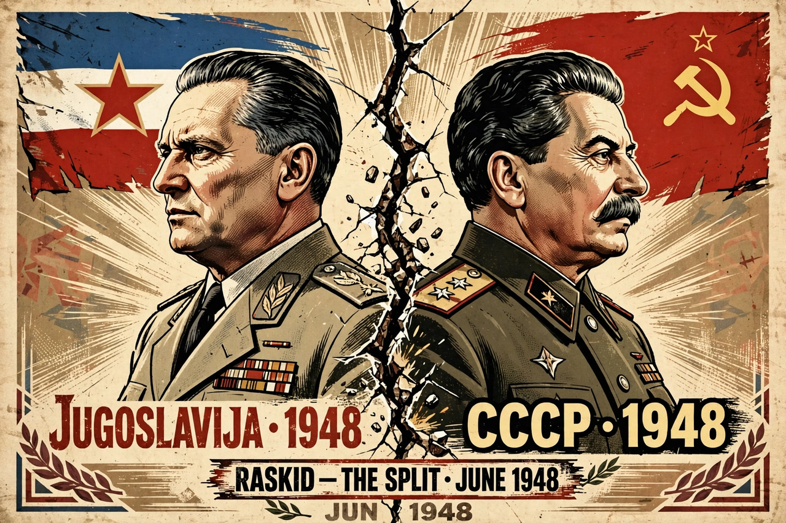

| Date | 1948–1955 |
|---|---|
| Location | Yugoslavia and the Soviet Union |
| Participants | Josip Broz Tito; Joseph Stalin; League of Communists of Yugoslavia; Communist Party of the Soviet Union; Cominform |
| Outcome | Yugoslavia expelled from the Cominform; Yugoslavia follows an independent socialist path and later co-founds the Non-Aligned Movement |
The Tito–Stalin split or the Yugoslav–Soviet split was the culmination of a conflict between the political leaderships of Yugoslavia and the Soviet Union, under Josip Broz Tito and Joseph Stalin respectively, which resulted in Yugoslavia's expulsion from the Communist Information Bureau (Cominform) in 1948. This was the beginning of the period of Informbiro in Yugoslav history, lasting until Tito's rapprochement with Stalin's successor Nikita Khrushchev in 1955.

The split made Yugoslavia the only communist state in Europe outside Soviet control.
Tito's Partisans had liberated much of Yugoslavia largely by their own efforts, with limited Red Army assistance, giving Tito an independent power base unlike other Eastern European communist leaders installed by Moscow. Disputes arose over Yugoslav ambitions in Trieste, Albania, and Greece, over the proposed Balkan Federation with Bulgaria, and over Soviet economic exploitation through joint-stock companies. Soviet advisers and intelligence agents operating in Yugoslavia further strained relations.
In March 1948 the Soviet Union withdrew its military and civilian advisers, and an exchange of increasingly hostile letters followed between the two parties. On 28 June 1948 the Cominform, meeting in Bucharest, expelled the League of Communists of Yugoslavia, accusing its leadership of nationalism and anti-Soviet deviation. Tito refused to submit, purged pro-Soviet "Cominformists" from the party, and many were imprisoned at the Goli Otok camp.
Stalin expected Tito to fall quickly, but Yugoslavia survived with Western economic and, after 1951, military aid, while remaining socialist. Yugoslav theorists developed workers' self-management as an alternative to Soviet central planning. The split was the first major fracture in the communist world and paved the way for Yugoslavia's role in founding the Non-Aligned Movement in 1961. Relations were normalised after Stalin's death, when Khrushchev visited Belgrade in 1955 and issued the Belgrade Declaration.